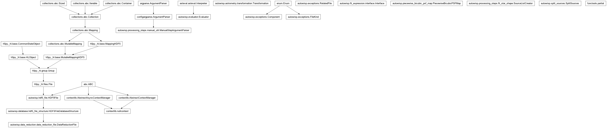

autowisp.processing_steps.fit_star_shape module
Class Inheritance Diagram

Fit a model for the shape of stars (PSF or PRF) in images.
- class autowisp.processing_steps.fit_star_shape.SourceListCreator(*, catalog_sources, fit_variables, grouping, grouping_frame=None, discard_faint=False, remove_group_id=None, **dr_path_substitutions)[source]
Bases:
objectClass for creating PRF fitting source lists for a single frame.
- __call__(frame_fname)[source]
Return the
fitpsf/fitprfsource list for this frame.- Parameters:
frame_fname – The filename of the frame to get PRF fitting sources of.
- Returns:
The values of all source variables PSF/PRF fitting will use for each fitting group. Each entry is suitable as input to FitStarShape.fit(), with only one fitting group enabled.
- Return type:
[numpy record array]
- __init__(*, catalog_sources, fit_variables, grouping, grouping_frame=None, discard_faint=False, remove_group_id=None, **dr_path_substitutions)[source]
Set up to create source lists for PSF/PRF fitting.
- Parameters:
catalog_sources – An array of catalog sources to fit the shape and measure the brightness of.
fit_variables – See –map-variables command line argument.
grouping – A splitting of the input sources in groups, each of which is enabled separately during PRF fitting. Should be a callable taking the input projected sources, catalog information, frame header and extra fit variables and returning A numpy integer array indicating for each source the PRF fitting group it is in. Sources assigned to negative group IDs are never enabled.
grouping_frame – If None, grouping is derived for each input frames separately, potentially resulting in a different set of sources enabled for each frame. If not None, it should specify the filename of a FITS frame on which to derive the grouping once and all subsequent fits are based on the same exact sources, regardless of where on the frame they appear, as long as they are within the frame.
discard_faint – See –discard-faint command line argument.
remove_group_id – See ‘–remove-group-id’ command line argument.
dr_path_substitutions – Any keywords needed to specify unique paths in the data reduction files for the inputs and output required for shape fitting.
- Returns:
None
- _group_and_flag_in_frame(header)[source]
Return the group each source belongs to and flag for is source in frame.
- Parameters:
header – The FITS header of the frame being fit.
- Returns:
The group index for each source
- numpy.array(bool):
True iff the source center is inside the frame boundaries
- Return type:
numpy.array(int)
related_filesclassifier for a simultaneous-fit frame set.The work item is a list of calibrated frames fit together, so an error scopes every frame in the set (module-level so it is picklable to the workers).
- autowisp.processing_steps.fit_star_shape.add_background_options(parser)[source]
Add options configuring the background extraction.
- autowisp.processing_steps.fit_star_shape.add_fitting_options(parser)[source]
Add options controlling the fitting process.
- autowisp.processing_steps.fit_star_shape.add_grouping_options(parser)[source]
Add options controlling splitting of sources into fitting groups.
- autowisp.processing_steps.fit_star_shape.add_shape_options(parser)[source]
Add options defining how the PSF/PRF shape will be modeled.
- autowisp.processing_steps.fit_star_shape.add_source_selction_options(parser)[source]
Add options configuring the selection of sources for fitting.
- autowisp.processing_steps.fit_star_shape.allowed_interrupted_status_values = (0,)
This step records only “started” before it finishes, so that is the only state an interrupted run can leave behind.
- autowisp.processing_steps.fit_star_shape.cleanup_interrupted(interrupted, configuration)[source]
Remove star shape fit datasets from the DR file of the given image.
- autowisp.processing_steps.fit_star_shape.create_source_list_creator(dr_fnames, configuration, catalog_lock)[source]
Return a configured SourceListCreator and the catalog behind it.
The catalog filename is handed back rather than scoped here: this function only resolves it, while the caller uses it for the whole fit, so that is where it belongs on an error.
- Returns:
- The configured creator, and the
resolved filename of the catalog it draws its sources from.
- Return type:
- autowisp.processing_steps.fit_star_shape.fit_frame_set(frame_filenames, configuration, mark_start, mark_end, catalog_lock=<contextlib.nullcontext object>)[source]
Perform a simultaneous fit of all frames included in frame_filenames.
- Parameters:
frame_filenames ([str]) – The list of FITS file containting calibrated frames to fit. The files must include at least 3 extensions: the calibrated pixel values, estimated errors for the pixel values and the pixel quality mask.
configuration (dict) – The configuration to use for PSF/PRF fitting, background extraction etc.
mark_start (callable) – Called for each frame in the set before processing begins.
mark_end (callable) – Called for each frame in the set after processing ends.
- Returns:
None
- autowisp.processing_steps.fit_star_shape.fit_star_shape(image_collection, start_status, configuration, mark_start, mark_end)[source]
Find the best-fit model for the PSF/PRF in the given images.
- autowisp.processing_steps.fit_star_shape.get_center_background(dr_file, header, fit_terms_expression, *, error_avg, rej_level, max_rej_iter, **dr_path_substitutions)[source]
Estimate the sky background at the center of the frame.
Fit a smooth function of position to the background measurements from shape fitting and evaluate it at the center of the frame.
- Returns:
The background level at the center of the frame.
- float:
The RMS residual of the background map fit.
- Return type:
- autowisp.processing_steps.fit_star_shape.get_dr_substitutions(configuration)[source]
Return the substitutions to use for DR file paths.
- autowisp.processing_steps.fit_star_shape.get_shape_fitter_config(configuration)[source]
Return a fully configured instance of FitStarShape.
- autowisp.processing_steps.fit_star_shape.has_astrometry(image_fname, substitutions)[source]
Check if the DR file contains a sky-to-frame transformation.
- autowisp.processing_steps.fit_star_shape.main()[source]
Run the step for fitting star shapes from the command line.